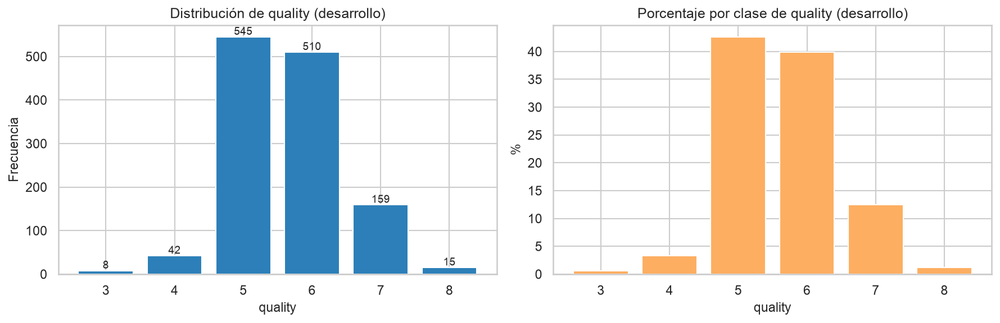
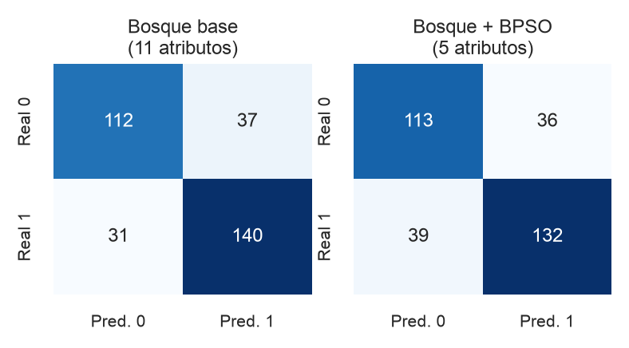
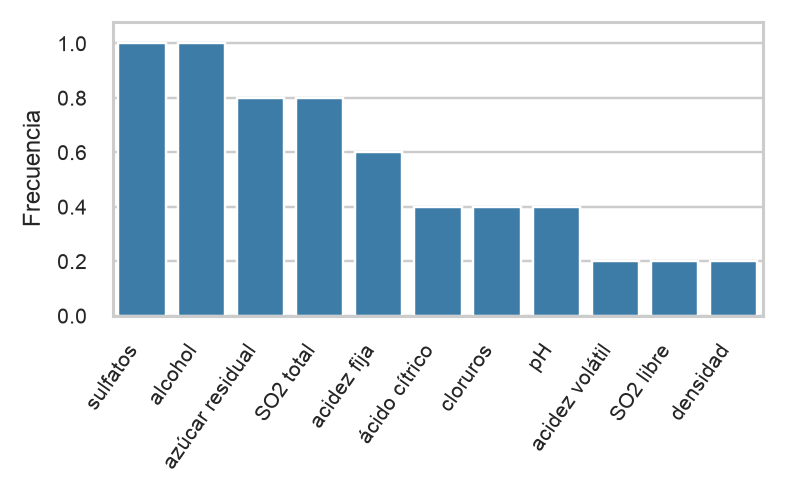
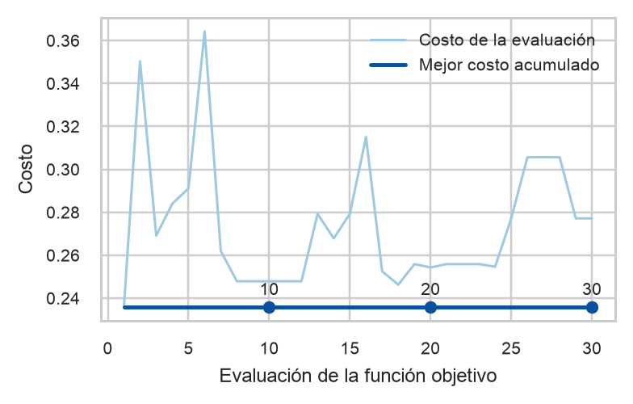

Resumen— La calidad sensorial del vino se estima habitualmente mediante cata, un procedimiento costoso y variable. Este trabajo examina si la optimización por enjambre de partículas binaria permite reducir las once variables fisicoquímicas del conjunto Wine Quality (vinos tintos, repositorio UCI, 1599 muestras) sin degradar un clasificador Random Forest. La puntuación original se transforma en una etiqueta binaria con el umbral quality ≥ 6. Se reserva un 20 % estratificado para prueba y la búsqueda se ejecuta solo sobre desarrollo, con validación cruzada estratificada de tres particiones. La función objetivo minimiza uno menos el F1-macro de validación más una penalización proporcional al número de atributos. Con 30 evaluaciones por ejecución y cinco semillas, la solución de menor costo retiene cinco atributos. Su F1-macro de validación es 0,787, frente a 0,783 del modelo con las once variables. En la prueba, evaluada una sola vez, el F1-macro pasa de 0,786 a 0,764. Alcohol y sulfatos aparecen en las cinco ejecuciones, pero los subconjuntos no son estables y la trayectoria seleccionada no mejora después de la primera evaluación. Bajo este presupuesto, la búsqueda simplifica el modelo a costa de una pérdida predictiva que no se compensa en el conjunto reservado.
Palabras clave— calidad del vino, selección de atributos, Random Forest, enjambre de partículas binario, validación cruzada.
I. Introducción
La calidad comercial del vino se decide, en gran medida, por una evaluación sensorial. Esa medición es útil, pero depende de catadores, no se obtiene en el mismo momento que el análisis de laboratorio y resulta difícil de repetir a escala. Los atributos fisicoquímicos —acidez, anhídrido sulfuroso, densidad, pH, sulfatos o grado alcohólico— sí pueden medirse de forma rutinaria. El conjunto Wine Quality mostró que esas variables contienen información sobre la preferencia sensorial y, al mismo tiempo, dejó abierta la pregunta de si todas ellas son necesarias [1].
Usar las once variables no es gratuito. Algunas pueden ser redundantes, otras pueden aportar poco a la frontera de decisión y el modelo resultante es más difícil de interpretar. La selección de atributos busca un subconjunto pequeño que conserve el desempeño [6], [7]. Cuando el criterio depende del clasificador, el enfoque natural es un método wrapper: cada candidato se valora entrenando el modelo que luego se va a utilizar.
El espacio de este problema tiene 211 = 2048 subconjuntos. Es finito, pero evaluarlo de forma exhaustiva con un ensamble y validación cruzada sigue siendo más costoso de lo que el presupuesto experimental permite. La optimización por enjambre de partículas (PSO) actualiza un conjunto de soluciones a partir de la memoria individual y de la memoria de la vecindad [4]. Su variante binaria representa la decisión de incluir o excluir cada atributo [5].
El clasificador de referencia es Random Forest [3]. Se mantiene con hiperparámetros fijos para que la comparación aísle el efecto de la selección. El objetivo es determinar si el enjambre binario obtiene un bosque más parsimonioso que mantenga, o no, el rendimiento predictivo del modelo con las once variables. Las contribuciones son experimentales: un costo que equilibra F1-macro y número de atributos; un protocolo con prueba reservada, tres particiones y cinco semillas; y el registro de convergencia, estabilidad y tiempo con los resultados obtenidos.
II. Fundamentos y trabajos relacionados
A. Random Forest
Random Forest construye varios árboles sobre muestras bootstrap y, en cada división, considera un subconjunto aleatorio de atributos [3]. El voto de los árboles reduce la varianza de un único árbol. Esa selección local en cada nodo no responde cuáles variables deben entrar al modelo final. Un wrapper externo evalúa el subconjunto de extremo a extremo. Por eso los hiperparámetros del bosque se dejan fijos: si se optimizaran junto con la máscara, no sería posible atribuir un cambio de métrica a la selección.
B. Optimización por enjambre de partículas
En PSO, cada partícula es una solución candidata. Su velocidad se corrige con inercia, un término cognitivo hacia la mejor posición individual y un término social hacia la mejor posición de la vecindad [4]. PySwarms obtiene el bit comparando un número aleatorio con la sigmoide de la velocidad [5], [11]. La topología usada es un anillo de mejor local, no un mejor global único. Con pocos vecinos y pocas iteraciones, un buen costo en la primera evaluación no demuestra que la dinámica de búsqueda haya encontrado esa solución.
C. Selección de atributos
La selección persigue reducir dimensión, atenuar atributos irrelevantes y hacer más interpretable el predictor [6]. Los filtros ordenan variables sin mirar al clasificador. Los wrapper usan el error del propio modelo y capturan interacciones que una correlación marginal no ve [7]. Xue, Zhang y Browne mostraron que un PSO multiobjetivo puede devolver varios subconjuntos no dominados [8], [9]. Este experimento es más restringido: un solo objetivo, un clasificador fijo y 30 evaluaciones por ejecución. No se pretende mejorar esos métodos.
D. Predicción de calidad del vino
Cortez et al. ajustaron regresión y clasificación sobre vinos tintos y blancos de vinho verde y compararon máquinas de vectores de soporte, redes neuronales y regresión múltiple [1]. Ya advertían el desbalance y la duda sobre la relevancia de todas las entradas. No se reproducen sus modelos ni se comparan cifras de error, porque la etiqueta, la partición y la métrica no coinciden.
III. Materiales y métodos
A. Conjunto de datos
Se utiliza exclusivamente winequality-red.csv del repositorio UCI [1], [2]. El archivo, separado por punto y coma, contiene 1599 registros, once atributos numéricos y quality, un entero observado entre 3 y 8. No se mezcla con los vinos blancos: las poblaciones no comparten la misma distribución y el enunciado fija once atributos. El uso académico queda condicionado a citar a los autores originales.
| Elemento | Valor observado |
|---|---|
| Registros / atributos | 1599 / 11 |
| Variable objetivo | quality ∈ {3, …, 8} |
| Valores faltantes | 0 |
| Duplicados exactos | 240 (15,0 %) |
| Desarrollo / prueba | 1279 / 320 (80/20) |
| Clase alta en desarrollo | 684 (53,5 %) |
| Clase baja en desarrollo | 595 (46,5 %) |
No hay valores faltantes. Los 240 duplicados se conservan: pueden ser perfiles repetidos y eliminarlos alteraría la frecuencia de las puntuaciones. Tampoco se eliminan extremos. En desarrollo, el criterio de Tukey marca sobre todo al azúcar residual (9,6 %) y a los cloruros (6,3 %). La puntuación se concentra en 5 y 6 (681 y 638 vinos). Las colas son 10, 53, 199 y 18 vinos para las calidades 3, 4, 7 y 8.
y = 1 si quality ≥ 6; y = 0 si quality ≤ 5. (1)
El corte se adopta después de ver la distribución de desarrollo. En el conjunto completo quedan 855 vinos de clase alta (53,5 %) y 744 de clase baja (46,5 %). Un vino de 6 y uno de 8 comparten etiqueta: el modelo no distingue excelencia de simple aceptabilidad.
B. Análisis exploratorio y preprocesamiento

La correlación de Spearman más alta con quality en desarrollo es la del alcohol (0,489), seguida por la acidez volátil (−0,376) y los sulfatos (0,362). El azúcar residual es casi independiente (0,036). Ningún par de atributos alcanza |r| = 0,70. Las asociaciones más fuertes son acidez fija con pH (−0,675), con densidad (0,669) y con ácido cítrico (0,662), y la relación entre anhídrido sulfuroso libre y total (0,658).
La partición, con semilla 42, separa el 20 % de prueba de forma estratificada sobre quality antes de binarizar y antes de la búsqueda. La prueba no interviene en la máscara. En desarrollo se usa validación cruzada estratificada de tres particiones, con la misma semilla en todas las comparaciones. No hay imputación. El escalado va dentro de un pipeline y se ajusta solo en cada pliegue de entrenamiento.
C. Modelo de referencia
El bosque de referencia usa las once variables, 100 árboles, profundidad máxima 12, mínimo de dos muestras por hoja y √p atributos candidatos por división. No hay búsqueda de hiperparámetros. La métrica principal es el F1-macro. En desarrollo, este modelo obtiene un F1-macro de 0,783 ± 0,013, exactitud balanceada de 0,783 y AUC-ROC de 0,864, en 0,335 s y tres ajustes.
D. Formulación de la optimización
x = [x1, …, x11], xj ∈ {0, 1}. (2)
S = {0,1}11, |S| = 2048. (3)
n(x) = Σ xj ≥ 1. (4)
Si n(x) = 0 no se entrena el bosque y el costo se fija en 2. En otro caso se minimiza
C(x) = (1 − F1-macroCV(x)) + λ · n(x) / 11, λ = 0,05. (5)
Cada atributo conservado suma aproximadamente 0,0045 al costo: la parsimonia solo gana si el F1 casi no cae. El costo del bosque completo es 0,267. La velocidad y el muestreo binario son los de PySwarms [5], [11]; no se reimplementaron.
E. Configuración y protocolo
Seis partículas y cinco iteraciones producen 30 evaluaciones por semilla. La parada es ese presupuesto. Los coeficientes son c1 = c2 = 0,5 y la inercia w = 0,9, con anillo dinámico de k = 3 vecinos. Las semillas son 42, 7, 123, 2024 y 99. Las máscaras repetidas se registran y reutilizan el costo ya calculado. La mejor ejecución se elige solo con desarrollo: menor costo, luego mayor F1-macro y, si hiciera falta, menos atributos. Los dos bosques finales se evalúan una sola vez en la prueba. Los tiempos corresponden a la ejecución en CPU documentada en el cuaderno.
IV. Resultados y discusión
A. Lectura del conjunto
La Fig. 1 justifica no usar seis clases bajo este presupuesto. La binarización deja un desbalance leve. Las correlaciones moderadas hacen arbitrario descartar variables solo por filtro. Como se verá, la asociación marginal tampoco predice la máscara del wrapper.
B. Comparación en prueba
La máscara de la semilla 42 conserva azúcar residual, dióxido de azufre total, pH, sulfatos y alcohol: cinco de once variables, una reducción del 54,5 %.
| Métrica | Bosque base | Bosque + BPSO |
|---|---|---|
| F1-macro | 0,7859 | 0,7642 |
| F1 binario | 0,8046 | 0,7826 |
| Exactitud balanceada | 0,7852 | 0,7639 |
| Precisión macro | 0,7871 | 0,7646 |
| Sensibilidad macro | 0,7852 | 0,7639 |
| Exactitud | 0,7875 | 0,7656 |
| AUC-ROC | 0,8580 | 0,8467 |
| Atributos | 11 | 5 |
| Entrenamiento (s) | 0,076 | 0,076 |
| Evaluación (s) | 0,014 | 0,013 |

En validación, el F1-macro de la máscara ganadora es 0,787, cuatro milésimas por encima del modelo completo. Esa diferencia es menor que la desviación entre particiones del baseline (0,013). El costo sí baja, de 0,267 a 0,236, por la penalización de tamaño. En prueba el F1-macro cae 0,022, la exactitud balanceada cae 0,021 y el AUC-ROC cae 0,011. Durante la misma trayectoria apareció una máscara de ocho atributos con F1 de validación 0,789 y costo 0,248; no se promovió a la prueba porque la regla de selección ya estaba fijada.
C. Atributos seleccionados

Sulfatos y alcohol aparecen en las cinco semillas; el azúcar residual y el dióxido de azufre total, en cuatro; la acidez fija, en tres. El azúcar residual tiene correlación marginal casi nula y aun así entra en la solución ganadora. La acidez volátil, segunda asociación más fuerte con la puntuación, solo entra en una mejor máscara. La frecuencia no es causalidad: el wrapper responde a interacciones del bosque. Con cinco semillas no corresponde recomendar esas variables como control de proceso.
D. Convergencia

Los cortes 10, 20 y 30 pertenecen a la misma trayectoria. El mejor costo acumulado es 0,236 en los tres. El costo instantáneo en esos puntos es 0,248, 0,254 y 0,277. El incumbente se alcanzó en la evaluación 1 y no volvió a actualizarse. De 30 llamadas, 18 fueron subconjuntos distintos. Las semillas 7, 123, 2024 y 99 sí mejoran su incumbente —en las evaluaciones 13, 19, 3 y 26—, pero ninguna supera el costo inicial de la semilla 42. La solución declarada ganadora es la primera partícula de la semilla más favorable, no el resultado de una mejora posterior. Treinta evaluaciones cubren alrededor del 1,5 % del espacio por ejecución.
E. Estabilidad
| Semilla | Costo | F1-macro | n | Tiempo (s) | Atributos retenidos |
|---|---|---|---|---|---|
| 42 | 0,236 | 0,787 | 5 | 5,59 | azúcar residual, SO2 total, pH, sulfatos, alcohol |
| 7 | 0,251 | 0,785 | 8 | 4,29 | acidez fija, ácido cítrico, azúcar residual, cloruros, SO2 libre y total, sulfatos, alcohol |
| 123 | 0,247 | 0,776 | 5 | 5,88 | acidez fija, azúcar residual, SO2 total, sulfatos, alcohol |
| 2024 | 0,252 | 0,771 | 5 | 6,34 | acidez fija, azúcar residual, densidad, sulfatos, alcohol |
| 99 | 0,248 | 0,784 | 7 | 6,52 | acidez volátil, ácido cítrico, cloruros, SO2 total, pH, sulfatos, alcohol |
El costo medio es 0,247 ± 0,007, el F1-macro medio es 0,781 ± 0,007 y el número de atributos es 6,0 ± 1,4. El Jaccard medio entre máscaras es 0,481. La intersección estable se reduce a sulfatos y alcohol.
F. Costo computacional
Las cinco búsquedas suman 28,63 s: 150 evaluaciones, 92 entrenamientos efectivos, 58 aciertos de caché y 276 ajustes de validación. El tiempo medio por evaluación queda entre 0,14 y 0,22 s. El ajuste final del modelo de cinco variables tarda lo mismo que el de once (0,076 s). La reducción no devuelve el tiempo de búsqueda ni acelera el modelo final.
G. Lectura crítica
BPSO no mejoró la predicción en datos no usados. La reducción de once a cinco atributos es material, pero la máscara no se repite entre semillas. El costo absoluto de la búsqueda es bajo en esta CPU y, aun así, no compra mejor generalización. Las limitaciones principales son el presupuesto —la ganadora no fue mejorada por el enjambre—, el uso de la misma validación para puntuar y para elegir, la partición externa única y la pérdida de la escala ordinal al binarizar.
V. Conclusiones
Se comparó un Random Forest con las once variables fisicoquímicas de los vinos tintos frente al mismo bosque restringido por un enjambre binario. El subconjunto elegido conserva cinco atributos y obtiene en validación un F1-macro de 0,787, indistinguible en la práctica del 0,783 del modelo completo. En prueba, el F1-macro baja de 0,786 a 0,764 y el AUC-ROC de 0,858 a 0,847. Alcohol y sulfatos se seleccionan siempre, pero el Jaccard medio de 0,481 muestra que el resto de la máscara no es estable. La trayectoria ganadora alcanza su costo en la primera evaluación y permanece detenida en los cortes 10, 20 y 30. Las cinco búsquedas cuestan 28,63 s y 276 ajustes de validación.
El experimento cuantifica el compromiso entre atributos y desempeño. No sostiene reemplazar al modelo de once variables cuando la prioridad es la predicción. Una continuación útil sería contrastar el enjambre con la búsqueda exhaustiva de los 2048 subconjuntos, ampliar el presupuesto hasta observar mejoras posteriores a la inicialización y repetir la partición externa.
Referencias
- P. Cortez, A. Cerdeira, F. Almeida, T. Matos y J. Reis, “Modeling wine preferences by data mining from physicochemical properties,” Decision Support Systems, vol. 47, no. 4, pp. 547–553, 2009, doi: 10.1016/j.dss.2009.05.016.
- UCI Machine Learning Repository, “Wine Quality,” dataset no. 186. Disponible: https://archive.ics.uci.edu/dataset/186/wine+quality.
- L. Breiman, “Random forests,” Machine Learning, vol. 45, no. 1, pp. 5–32, 2001, doi: 10.1023/A:1010933404324.
- J. Kennedy y R. Eberhart, “Particle swarm optimization,” en Proc. IEEE Int. Conf. Neural Networks (ICNN), vol. 4, 1995, pp. 1942–1948, doi: 10.1109/ICNN.1995.488968.
- J. Kennedy y R. C. Eberhart, “A discrete binary version of the particle swarm algorithm,” en Proc. IEEE Int. Conf. Systems, Man, and Cybernetics, vol. 5, 1997, pp. 4104–4108, doi: 10.1109/ICSMC.1997.637339.
- I. Guyon y A. Elisseeff, “An introduction to variable and feature selection,” J. Mach. Learn. Res., vol. 3, pp. 1157–1182, 2003.
- R. Kohavi y G. H. John, “Wrappers for feature subset selection,” Artificial Intelligence, vol. 97, no. 1–2, pp. 273–324, 1997, doi: 10.1016/S0004-3702(97)00043-X.
- B. Xue, M. Zhang y W. N. Browne, “Particle swarm optimization for feature selection in classification: A multi-objective approach,” IEEE Trans. Cybern., vol. 43, no. 6, pp. 1656–1671, 2013, doi: 10.1109/TSMCB.2012.2227469.
- B. Xue, M. Zhang, W. N. Browne y X. Yao, “A survey on evolutionary computation approaches to feature selection,” IEEE Trans. Evol. Comput., vol. 20, no. 4, pp. 606–626, 2016, doi: 10.1109/TEVC.2015.2504420.
- R. Kohavi, “A study of cross-validation and bootstrap for accuracy estimation and model selection,” en Proc. 14th Int. Joint Conf. Artificial Intelligence (IJCAI), 1995, pp. 1137–1143.
- L. J. V. Miranda, “PySwarms: a research toolkit for particle swarm optimization in Python,” J. Open Source Softw., vol. 3, no. 21, p. 433, 2018, doi: 10.21105/joss.00433.
- F. Pedregosa et al., “Scikit-learn: Machine learning in Python,” J. Mach. Learn. Res., vol. 12, pp. 2825–2830, 2011.